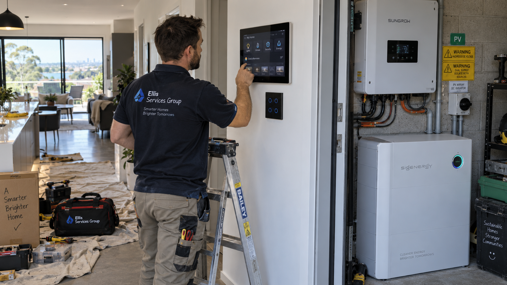

Smart Home & Energy Electrical Services in Perth
Arrange smart-home and energy electrical services in Perth with Ellis Services Group. Our local electrical team assesses smart lighting, home-control upgrades and electrical work associated with energy equipment. We define the equipment, compatibility and installation requirements before providing a written quote, so the proposed upgrade has a clear scope.
Call 0413 477 667 Book smart-home and energy electrical workSmart-home electrical installations and upgrade assessments
Smart lighting and electrical controls
Smart switches and lighting controls need to be considered with the existing fittings, wiring and intended operation. Tell us what you want to control, which rooms are involved and any selected equipment. Our assessment establishes the installation requirements. If a current circuit keeps tripping, book safety-switch and RCD repairs before treating it as an upgrade request.
Home automation and linked equipment
An upgrade can involve both the visible control and the equipment it needs to operate. We review product specifications, existing connections and the proposed integration. A working control panel alone does not establish that every connected function has been included; the quote identifies the actual equipment and functions within the agreed job.
Electrical work associated with energy equipment
For work involving existing energy equipment or a proposed upgrade, send the model information and the result you need. We assess the relevant electrical requirements and define the proposed scope. Equipment supply, manufacturer servicing, commissioning and specialised installation approvals are not assumed to be included in a general electrical connection request.

How smart-home and energy work is scoped and quoted
We begin with the property, existing installation and equipment specifications. Our electrician assesses compatibility, access and the required connections, cable routes or circuit work. The written quote describes those tasks so you can distinguish the electrical installation from product supply, software configuration or other services that are not included.
A defined upgrade rather than an assumed package
Tell us whether you want to improve a current setup or install selected new equipment. We discuss the requirements for the proposed controls and the existing property before finalising the scope. We do not promise manufacturer compatibility, energy savings or remote-control functions before the installation and equipment have been assessed.
For approved work, we complete and check the relevant electrical installation and explain the functions included in the scope. Product-specific instructions remain important for ongoing use. If the request is simply a new light or outlet, our lighting and power-point services offer a focused route; existing loss-of-power issues belong with electrical fault finding.
Our Perth plumbing and electrical work is carried out by appropriately licensed trades. Licence details are available on request.
Safety: Do not open electrical or energy equipment, alter wiring or handle damaged components to gather information. For immediate danger, Call 000.
Smart-home and energy electrical installation quotes
We provide a written quote after assessing the equipment, existing connections and installation requirements. Product supply and connection work are identified separately; no fixed package is assumed before assessment.
What your written quote covers
Existing equipment, manufacturer specifications, the intended controls and integration with the property determine the installation plan. Compatibility, cable routes, access and any additional electrical work are assessed before quoting. The scope states the equipment and integration work included rather than promising compatibility or energy savings before the site assessment.
The final written quote sets out the work included, materials and any agreed additional tasks. We explain changes to the scope before extra work proceeds. Request a smart-home and energy electrical work quote.
Smart Home & Energy Electrical Services in Perth FAQs
Confirm the product before planning the electrical work
Smart lighting or controls may involve network settings, product configuration, fixed wiring or a combination. State the brand, model and intended result if known. Solar, battery, EV charging and specialist energy work are research topics, not automatic service commitments on this page. Confirm the relevant capability and scope before purchasing equipment or approving installation.
Can you work with every smart-home brand or protocol?
No universal compatibility is assumed. Give the product details and existing system so the proposed configuration and electrical scope can be assessed before acceptance.
Does this page confirm solar, battery or EV-charger installation?
No. Those products can require specialist capability and a separate agreed scope. Ask about the specific equipment and work; this general enquiry is not confirmation that every energy system can be installed or repaired.
Do I need detailed installation specifications before contacting you?
No. Tell us the fixture, equipment or upgrade you need and your Perth suburb. We assess the site and connections, confirm the requirements and qualified work arrangements and provide the written quote. Additional access is agreed with you first.
Can I send photos?
Photos are optional: email safely taken photos to maxinemaintenance.au@outlook.com. You can contact us without photos. Do not approach a hazard, remove covers or dismantle equipment to take a photo.
What should I include in a smart-home electrical enquiry?
Include the property address, the equipment or control you are considering, the rooms affected and the outcome you want to achieve.
Can existing energy equipment be assessed?
Describe the equipment and the behaviour you have noticed. Leave covers and electrical connections in place until the work can be assessed safely.
How is smart-home or energy electrical work priced?
Pricing is based on the agreed electrical scope, equipment requirements, property access, materials and any circuit work confirmed through the enquiry or assessment process.
Can you confirm compatibility before I approve the work?
Compatibility forms part of the installation assessment. We review the selected equipment and existing setup, then identify the proposed functions and electrical tasks in the written scope rather than promising universal integration.
Book smart-home and energy electrical work in Perth
Send the suburb, equipment model, existing setup and the controls or functions you want. Product specifications and available access help define the installation; photos are not a prerequisite for contacting us. Our local team covers all six Perth service regions from our office at 140 St Georges Terrace, Perth WA 6000.
Call to discuss the work or send the property details through our enquiry form. You do not need to diagnose the fault or complete a technical inspection before contacting us.
Call 0413 477 667 Request a visit & written quote